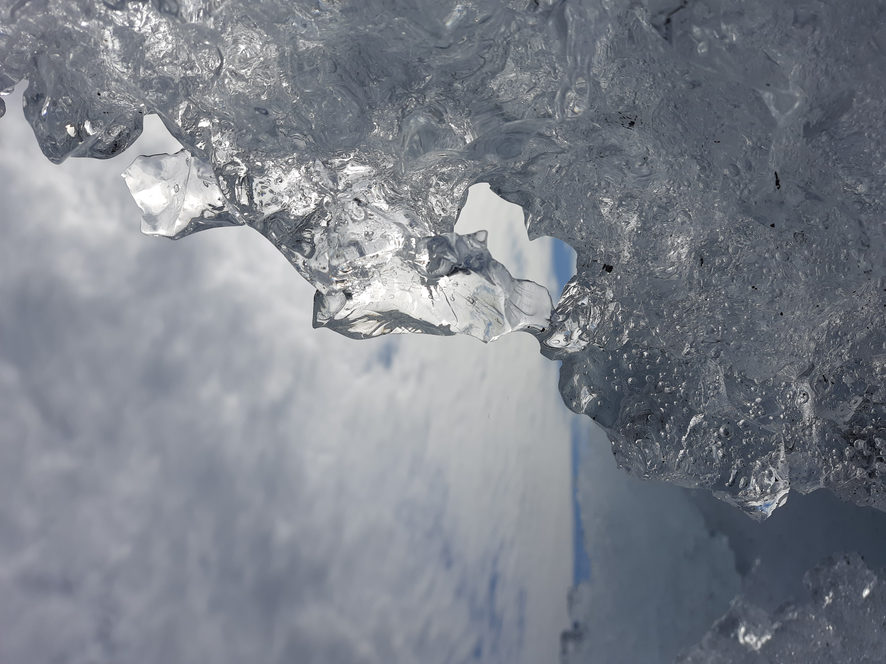

Current area of study
Program or subject · institution · current focus.
YOUR FOCUSIN PROGRESS
02 / LEARNING & EXPERIENCE
The studies, extra classes, challenges, and milestones behind the work. A timeline makes the progression easy to scan.
VIEW THE JOURNEY ↓
EDUCATION & EXPERIENCE
Newest first, or keep it chronological.
Use the dates to make the story clear.
Program or subject · institution · current focus.
Institution · qualification · area of concentration.
Course · provider · skill or knowledge applied afterward.
Challenge · contribution · outcome or key learning.
COURSES & EXTRA CLASSES
Include technical, creative,
and personal development.
“The most useful thing I know is how much there is left to learn.”
A WORKING PRINCIPLE / 001RECOGNITION
Awards, placements, grants,
and other meaningful results.
Issuing organization · recognition criteria
Competition · category · team or individual
Issuing organization · field or achievement